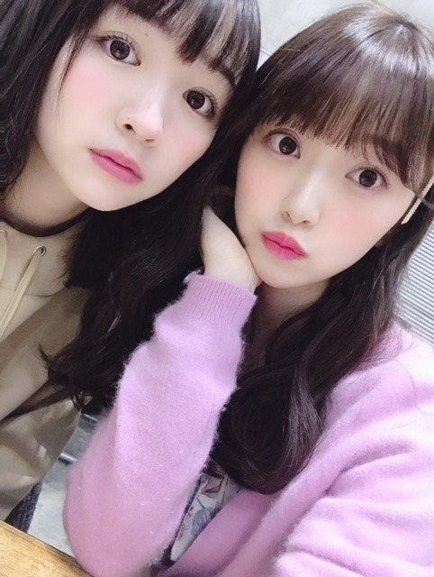

2019/0919Thuニーハイブーツ
gossip girlのサントラを毎日聴いてます〜❤︎
みんなが大胆に、素直に、キラキラと生きている姿がだいすきです☺︎
ブレアのわがままプリンセス感がたまりません！
ファッションも好きだなぁ
まだ全部見れてないから早くみないと> <

今日起きたらもう寒くて、、
あ〜はやく秋冬服が着たいなぁって☺︎
今年は特に、ニーハイブーツをたくさん履きたいの！！
この間撮影で履いたんだけどやっぱりかわいい❤︎
ニーハイブーツ集めなきゃな~

みりみお❤︎

バスガイドいつかやってみたいな~
あ、バスツアーいきたい！
質問ブログつぎあたり?やります❤︎
なので質問コメント受け付けます
答えたことのある質問は基本、変わってないかぎり答えません！
よろしくお願いします~
ではは
2019/09/19 18:54


コメント(1010)
質問 今一番ライブしたい場所はどこですか？
最近食べてて美味しかったものは？
次のブログも楽しみにしていますー！
未央奈大好き！
質問しまーす
握手会行ったことないけど行っていいですか？
これからも応援してます٩(๑>∀<๑)۶
意外と思った性格のメンバーとその理由があれば教えて。
gossip girlは人気ですよね、観てみようかな。
今朝は涼しかったですね、寝坊してしまい愛犬の散歩に薄着で出たので失敗。
未央奈さんの秋冬服姿が、ホント楽しみです。
ブーツもですが、ニーハイブーツ姿は凄く好きです。
雰囲気が明るくなるし、シルエットが綺麗で。
自分は足フェッチ？なのか分かりませんが、足と足下の靴は重要ですね。
沢山集めて、未央奈さんコレクション期待してます。
可愛い写真ばかりですが、これからの秋冬服に髪の長さはロングが良いかな、と思います。心の声に従って、と書いたものの未央奈さんのロングが見たい方が強いかな。
切るのは春にされては？
未央奈さんはナレーション上手いから、バスガイドはかなりいけるのでは。
Am I Loving?とか歌われたら、とろけそうです。
質問は:
・朝日と夕日はどちらが好きですか？(朝焼けと夕焼けも含みます)
・コバルトブルーの静かな海と南国の透き通る海はどちらが好きですか？
・この秋注目の秋ドラマありますか？
書きすぎでしょうか、沢山ありはするのですが。
体調には気をつけてくださいね。
頑張って行きましょう！
未央奈と美月と与田ちゃんとバスツアーいきたいッス。そんで、バスの中でカラオケやりたいッス。
最近、テレビ、映画と大活躍の未央奈さんに質問。この人には絶対、一生かかっても勝てないなっていう俳優(女優)さんっていますか？理由も教えて下さい。じゃぁ、泣きのもう１つ。お願い。一生のうちで、これだけはかたえたいって夢はありますか？
じゃぁね。宜しく。バスツアー行こうね。
未央奈さんと乃木坂さん応援してます。
You girls are the best, trust yourself, challenge the unknown future and live up to what you think to be right.
一番仲のいい二期生は、誰ですか
好きすぎてやめられない食べ物は、何ですか。
好きなアイドルファッションは
プリンセス堀 バスガイド堀 いろんな堀未央奈ちゃん。
観てみたい。乃木坂工事中で堀未央奈のバスツアー観たいきもしもす。とにかく目立ってほしいーそれだけです。
久々にみり愛ちゃんとのツーショット観れてよかった。
幸せ。
この前の社員旅行はバスガイド付きの旅行だったよー！！
話も面白くて結構詳しい方でしたー！！
やっぱり、旅行って最高だー！！
っで、突然やけど質問いい？？
岐阜でおススメの観光スポットは？？
今度行く予定なので教えてほしいー！！
そんな憧れのみおなちゃんに質問があります。
小顔に少しでも近づくためにみおなちゃんはなにをやっているの？
いつも綺麗で憧れます！
おうちでしてるケアはなんですか？？
(前に答えたことある質問だったらごめんなさい！)
いつも応援しています！
水色のバスガイド風の衣装、モバイルのデパートの写真だよね？
それ好き～！似合ってて可愛い❤️
質問！
握手会で名札つけていくとしたら、名前かブログにコメントしてる名前どっちの方が覚えやすい？
それともどっちもですか？
ちょこちょこ間空いてしか会いに行けてませんがいつか認知もらいたいので質問です！
この前の社員旅行はバスガイド付きの旅行だったよー！！
話も面白くて結構詳しい方でしたー！！
やっぱり、旅行って最高だー！！
っで、突然やけど質問いい？？
岐阜でおススメの観光スポットは？？
今度行く予定なので教えてほしいー！！
♡未央奈ちゃんに質問♡
今ポーチ欲しくて、未央奈ちゃんどんなポーチつかってる？？
未央奈ちゃんは最近なんの映画みにいったー？？
よかったら教えてください！だいすき！！
握手会やツアーお疲れ様です！
質問です、最近やってみたいとも思うスポーツってありますか？
私は最近ずっと
僕のこと、知ってる？
を永遠リピートしてます
ライブ映像を見たのですが
期生ごとに向かってきて歌う
みんなにキラキラしていて
本当に素敵でした
歌詞が好き
それもありますが
私はリズム感や音程
みんなの歌ってる時の表情が
とても好きです
テレビでも披露してほしいぐらい
大好きな歌となりました
乃木坂46の魅力は
みんなの顔面偏差値の高さもありますが
歌の素晴らしさ
これも魅力の一つだと思います
表現力のある方や歌の上手な方
ダンスが上手な方
色んな才能を持っている人が集まっていて
素晴らしいグループだと
常に思っています
みりみお
可愛い
今度またプリン会の写真も
見たいです
バスガイドさん風の未央奈ちゃん
激カワです
前髪ありの未央奈ちゃん
すごく好きなのですが
特にこの写真の未央奈ちゃん
めちゃくちゃ可愛いです
どんどん綺麗になって
尊敬です
〜質問〜
どんな役を演じてみたい？
2期生への愛を語ってください
1期生、2期生、3期生、4期生それぞれ1番仲のいい人は？
未央奈ちゃんのこだわりは？
忙しいはずなのに
ブログ更新ありがとう
いつも嬉しいです
休める時には休んでね
体調には気をつけてください
未央奈大好き！！
同じ岐阜県出身ですっごく嬉しい。
質問です。
今中学生なんだけど部活の部長をやってて、後輩とか見てるとイライラしてきてストレスがたまってしまいます。
◎どうやってストレス発散していますか？
もう一つ質問です！
友達と今あまりうまく接することができなくて、すごく冷たい態度をとってしまいます。
◎友達関係がうまくいかなかったときどうしてますか？
すごく重い質問をしてごめんなさい
答えてくれたら嬉しいです。
これからも頑張ってください。応援してます。
Q.外食の時、メニューをじっくり見て決める派ですか？それとも即決、メニューもあまり見ない派ですか？
自分はメニューをじっくり見て気めます！！
そして、注文した後も悩みます笑笑
3つ4つ前のブログの続きを書いて欲しいです！
1つ目の空しかわかんないから楽しみ〜
3期生、4期生とは誰と良く喋る？？
なにをしたあげたいですか？姉として！
今晩は!未央奈ちゃん今日も1日お疲れ様です!
昼間は少し暑いですが、大分朝晩は秋の涼しさを感じる様になりましたけれども如何お過ごしでしょうか？
質問!
バスツアーに行くとしたらどんな所に行きたいでしょうか？
質問です。
箸くんは今度いつ披露してくれますか？
未央奈のスタイル維持の方法を知りたい〜！！
あと普段の1日の食事を教えて〜！^_^
好きなお酒はありますか？？
なかったら最近ハマってるコンビニお菓子、スイーツは？？
僕はブラウンとくすんだ青です！
大好きやお！！！
みおなちゃんはたくさんの努力をしていてしっかりと、成果も目で見てわかるほど出ていてすごくすごく尊敬しています。
私も憧れのみおなちゃんを見習いながら毎日生活しています。
自信を持つには何をするのが大切ですか？
ブログの更新多くてとっても嬉しいです( ◠‿◠ )❤︎
最近よく買うお洋服はどこのですか？
秋冬におススメのカラーを教えて！
少しでも仲良くなった4期生の子はいますか〜？
未央奈のおしゃれに関する発信力は本当に最強です！！
男の子のファンだけじゃなく、女の子のファンが多いのもそういう理由からだと思います！！
これからもたくさん発信してください☆彡
未央奈だいすき♡
来年大学入って上手くメイクできるか不安です…メイクって簡単にできるようになるものですか？？
今まで見た夢で印象に残ってる夢は何ですか？？？
チョロかったですね笑
未央奈はちゃんとブログ更新しててファン想いだなって思います。(更新してないから悪いとかではなく)
継続は力だね。尊敬してます。
また釣られたらコメントします。
コメントする